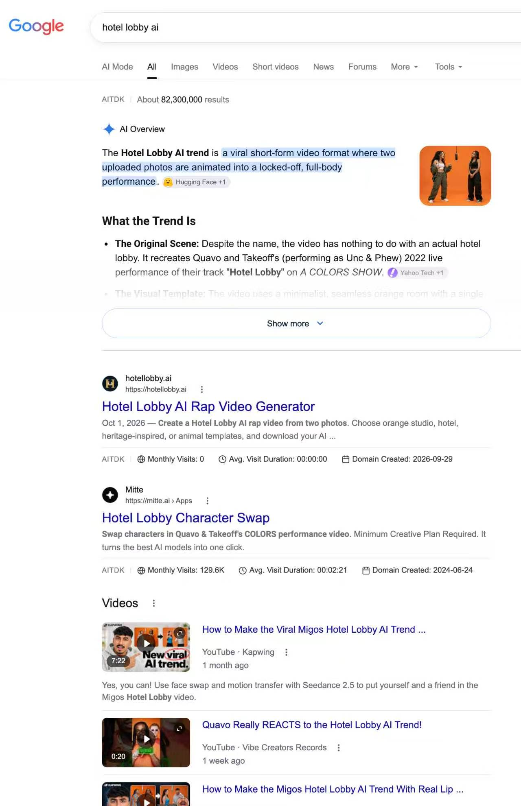
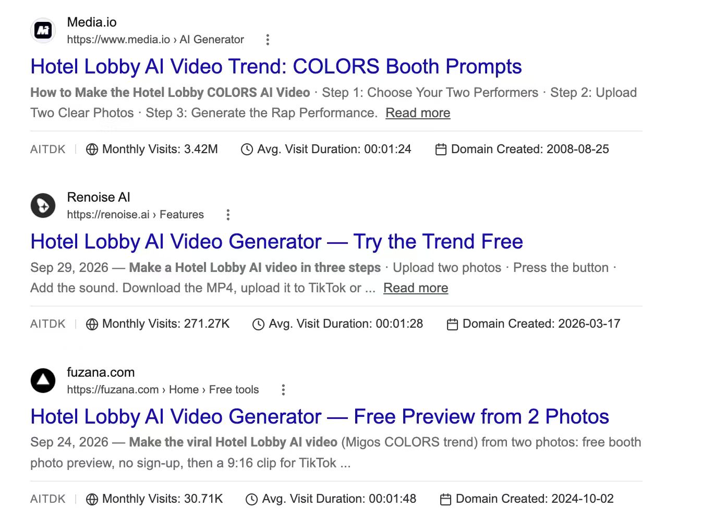

一个已经不火的词还能拿来做什么？哥飞的回答不是继续做它，而是拿它当入口：先用这个词找到一批能靠内页排上去的站，再顺着这些站找到它们正在追的新词。他把这套动作叫词找站，站找词，说白了就是抄同行的作业。
词找站：用一个词找出一批站
以 hotel lobby ai 为例：搜这个词，找出仅靠内页就能拿到排名的网站，再看这些站还有哪些页面在获取流量、最新上线了哪些页面。

截图里两个结果形成对照：hotellobby.ai 域名创建于 2026 年 9 月 29 日，月访问还是 0；mitte.ai 域名创建于 2024 年 6 月，月访问 12.96 万。同一个词，新站和老站都在做。
为什么还要看这些站的其他页面
因为这些站有嗅觉：既然能找到 hotel lobby ai 并上页面，自然也能找到别的新词上页面。一直跟踪这些站，就等于持续拿到它们已经筛过一遍的词。
站找词：用 Similarweb 看落地页
具体路径是：Similarweb → 关键词 → 关键词研究 → 网站浏览工具 → 落地页，输入域名，查看最近 28 天能拿到流量的页面和对应关键词。
以 mitte.ai 为例，截至 10 月 30 日的 28 天里，落地页列表第一行是 /app/hotel-lobby-character-swap，点击量 33.5K、旁注 53.18%，对应关键词正是 hotel lobby ai；往下还有 ozil goal ai、genjutsu ai、character sheet、minecraft skin editor 等一批页面。
工具链的核心：上一个工具的输出当输入
哥飞说翻来覆去就用几个工具：熟悉每个工具的输入和输出，把上一个工具的输出当作下一个工具的输入，串起来之后就可以循环往复，不断发现关键词、页面和网站。
他强调这句话要手动玩明白，而不是让 AI 代做；手动做熟之后，「你就有了月入万刀的基础了」。
拿谁当老师：media.io
同样的方法也可以用来查一组对标网站。哥飞特别点名 media.io：这是万兴科技的网站，追踪新词有工具、追得特别快，适合拿来当老师。

这张结果页里，media.io 月访问 342 万，renoise.ai 月访问 27.13 万，fuzana.com 月访问 3.07 万，各自都做了 hotel lobby ai 的落地页。